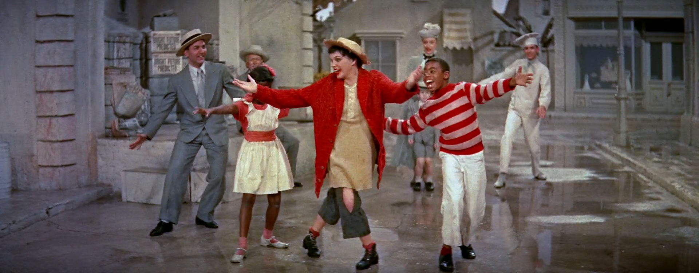
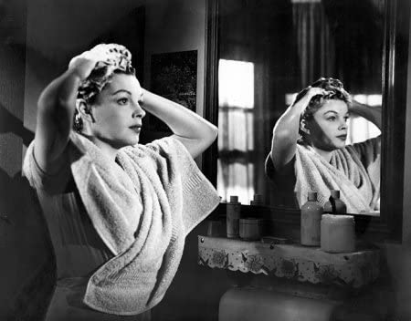

- Directed by George Cukor
- Produced by Sid Luft [Garland’s then husband]
- Starring
- Judy Garland
- James Mason
- Charles Bickford
- Jack Carson
A bit of nostalgia tonight, a look at the 2019 restored version of Garland’s ‘A Star is Born’.
There have been 4 versions of A Star is Born. The original with Janet Gaynor and Frederic March, the Garland version, Barbara Streisand and Kris Kristofferson version and the Lady Gaga, Bradley Cooper version.
The first two are the only versions with any credibility.
The 1954 version is a dog’s breakfast of a film. Garland had wanted to film it since 1942 but couldn’t get any backing. Not until her new husband Sid Luft came on the scene did she have a backer, and Warner Bros. took up the challenge. She was obviously going through a lot of trouble physically. The first half of the picture she is obviously overweight, her makeup and hair are frightful [I’m not sure who was responsible for that] and her nervous hyper acting style is over the top.
One can only imagine that they took a break from filming, because in the second half of the film, she is slimmer, she looks much younger, her makeup and hair are spot on, and she has [or the director has] calmed down her histrionics. The resultant second half of the 3-hour film is better.
In many ways it is just a display of Garland’s song and dance skills. All musical sequences seem over-extended and could be shortened to good effect.
 The newspaper in the background reads "Bright Future Predicted". They may have been referring to the fact that the song was nearly over.The story could be told in 90 minutes, but then you wouldn’t have Garland’s musical ability on display. In many ways it is as if we are attending a Garland concert [but certainly not her Melbourne performance in the early sixties]. She is at her best in the long scene with Bickford in the dressing room during a pause in filming, where she pours her heart out to him about her alcoholic husband, Mason.
 The scene where she sings "Decore" remains a fan favourite.She was nominated for an Academy Award but lost out to Grace Kelly. That result is correct as Garland’s performance though very good in parts, particularly towards the end, does not surpass the stoic control of Kelly, in ‘A Country Girl’. Garland’s performance is not consistent.
James Mason is solid; however, he looks extremely embarrassed having to partake in musical comedy routines with Miss Garland, particularly when they fall on the floor behind a sofa after one of her longer routines. He is splendid in the lead up to and the execution of the suicide scene.
Jack Carson is splendid. Warner Bros. always had him playing buffoon like characters, but here he gets to act and he’s very good.
That stalwart actor Charles Bickford plays the studio boss, with a wise head on his shoulders. His handling of Garland in the later tragic scenes is acting of the highest order. Who could forget his earlier work in ‘Johnny Belinda’ and his later great performance in ‘A Big Country’.
The restoration is perfect throughout and includes stills incorporated into the film with the original dialogue on the soundtrack. This works very well and keeps the continuity flowing which had not been apparent in earlier versions.
Well worth a look if you are interested in Garland’s career and, also Mason’s.
No matter what you think, it is worth sitting through the 3 hours, to hear Garland deliver the final line – ‘This is Mrs. Norman Maine’. [It never fails to get me.]
One for film buffs.
Star Rating: 3/5 [A trip down memory lane!] [A trip down memory lane!]